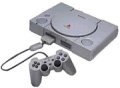
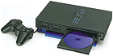
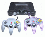
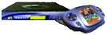
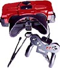
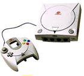
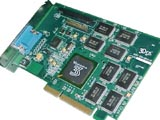

Games Technology
• www.smartcomputing.com/gameguide2000/gamehistory
- History of game development from 1889 to present time.
Electronic games are implemented using different hardware:
| • |
Console games - also called video
games. Consoles work as TV attachments, such as those for Nintendo
or Sony playstations (1 or 2)
. Games come on CD or DVD. |
| • |
Computer games - played on standard
computers with various operating systems ( windows,
Linux,
Mac
). Games come on CD or DVD. Examples:
Myth
2 and Diablo
2. |
| • |
Palm devices and cellular phones
- may have computer games too (read more). |
| • |
Handheld game devices - from simple
single-game to versatile small consoles like famous "Game Boy", which runs
popular games Pokemon
Gold/Silver and Super Mario DX (more than 400 game titles, more than
10 years in production, more than 100 mln copies sold). |
Virtual Reality:
Some computer games can work with virtual reality helmets
which you put on your head. This device has built in screen and sound and
has the ability to detect the movements or rotations of the player's head.
This makes first shooter games much more fun.
Internet communication:
Most of today's games allow several players to interract and
play together via internet (or LAN). Includes multiplayer gaming and chat.
• directory.google.com/Top/Games/
- Games directory on Google
• Video_Games/
- Video Games directory on Google
• Console_Platforms/
- Console Platforms
•
Nintendo/
- (Nintendo 64, Game Boy, Virtual Boy, etc.)
NES = Nintendo Entertainment System (1983-1994)
•
Sony/
- Sony (Playstations)
•
Sega/-
Sega (Dreamcast, etc.)
• dir.yahoo.com/Recreation/Games/Computer_Games/Cheats__Hints__and_Codes/
- List of gaming sites on Yahoo!
• www.zdnet.com/downloads/games.html
- Games on ZDNet
• www.gamespot.com
- ZDNet Gamespot
• www.dmoz.org/Games/
- Open Directory project Directory on Games
• dailyradar.com
- news
• http://www.smartcomputing.com/..
- Guide "Gaming and Electronic Entertainment". Guide Series Vol 8
Issue 10.
Sites to know:
• www.oh-boy.com/
-
• www.gamepro.com/
-
• www.eidosinteractive.com/
-
• www.happypuppy.com/
-
• www.blizzard.com/
-
• www.pcgamer.com/
-
• www.dailyradar.com/
-
• www.next-generation.com/
-
• www.psmonline.com/
-
• www.dreamcastmagazine.com/
-
• www.nintendo.com/
-
• users.penn.com/~jminer/hardware.htm
- comparison of several consoles
| Sony: |
Sony Playstation 1
Almost as small as a personal CD player. Includes the revolutionary
Dual Shock Analog Controller, designed for better handling and precision.
The controller has multiple vibration devices that react appropriately
to the action in your Dual Shock-compatible game--whether there's a big
explosion or a small speed bump.
32-bit processor, CD-ROM. |
 |
Sony Playstation 2 Computer
Entertainment System
http://www.playstation.com/playstation.asp
(Launched in 2000) ~$300
128-bit Emotion Engine processor, 300 MHz clock rate
24X CD-ROM drive, 4X DVD-ROM drive
Supports PlayStation 2 CD-ROM, PlayStation CD-ROM, video DVD, audio
CD |
 |
| Nintendo Co.,
Ltd., of Kyoto, Japan, is the acknowledged worldwide leader
in the creation of interactive entertainment. To date, Nintendo has sold
more than one billion video games worldwide, has created such industry
icons as Mario® and Donkey Kong® and launched franchises like The
Legend of Zelda® and Pokémon™. Nintendo manufactures and markets
hardware and software for its popular home video game systems, including
the Nintendo 64 and Game Boy - the world's best-selling video game system.
As a wholly owned subsidiary, Nintendo of America Inc., based in Redmond,
Wash., serves as headquarters for Nintendo's operations in North America. |
Nintendo
64 - 64-bit graphics, CD-quality sound, 93.75 MHz.
Allows you to play all the amazing N64 games (sold separately).
The Nintendo 64 system has the capacity to use up to four controllers
for multiplayer gaming. |
 |
Nintendo 2000(Project Dolphin) - to be released in April 2001
128 bit 400 MHz, 64 MB |
 |
Nintendo
Game Boy (small hand-held).
Launched in 1989, in
11 years sold more than 100 mln devices. |
 |
Nintendo Virtual
Boy - was released in 1995.
Was sold poorly.
Parents were afraid that VB could cause
eye damage to children.
Nintendo doesn't produce VB games at all anymore.
Read more nintendoland.com. |
 |
Sega:
Has good arcade and fighting games.
www.sega.com |
SegaDreamcast
Console for video gaming
128-bit processor, 200MHz clock rate
16MB RAM, 12X CD-ROM drive
3-D sound, Yamaha Super Intelligent Sound Processor
3-D graphics, 16.77 million colors, Over 3 million polygons per second
56k modem |
 |
| Microsoft: |
Xbox console (~$500): preview
- to be released in October 2001
DirectX API game development tools,
Intel Pentium III 733MHz processor technology with Streaming SIMD Extensions
300MHz custom-designed X-Chip, developed by Microsoft and nVidia,
64 MB of RAM (unified memory architecture)
Custom 3-D audio processor
8GB hard drive
5X DVD drive with movie playback, 1920x1080 maximum resolution, HDTV
support
Four game controller ports, Expansion port, Proprietary A/V connector,
10/100 MBps Ethernet
Broadband enabled, Modem enabled (optional) |
|
Gaming devices are optimized to display fast changing graphics, video
and sound.
They use 128 bit RISC processors, specialized pattented graphics processors,
etc.
Main companies invest billions and years in R&D (Research
and Development).
Sony:
• www.channeltechnology.com/
- Channel Technology
• www.playchip.com/mainleft.html
- Play Chip
• psx.ign.com/reviews/12258.html
- play playstation games on PC using emulator (Bleem).
• www.psx2central.com/naug00.htm
- programming for the PlayStation 2 is very similar to building PC games.
Main difference in the graphics. The PS2's graphics pipe is an extremely
complicated beast and it often requires a tremendous investment in time
and effort to get the desired effect.
• www.scea.com/
-
• www.psxnetwork.com/psxnjapan.shtml
- PSXNetwork - Playstation 2 coverage
• www.ign.com/affiliates/multigames_1.html
-
Nintendo:
• www.wishtech.com
- The Adaptoid - use your N64 controller to play games on your computer!
(USB interface).
Sega:
• http://www.powervr.com/WhitePapers/Whitepapers.htm
- PowerVR technology (graphics and video processing) - used in Sega Dreamcast
• http://dreamcast.ign.com/news/16137.html
- adding Video conferencing and voice mail to the Dreamcast
Here are specs of latest Sega arcade board NAOMI2 (www.segaweb.com/news/0900/076.html):
CPU: SH4 128bit RISC CPU
Graphic Engine: Power VR2
Sound Engine: Super Intelligent Sound Processor 32bit RISC CPU (64
channel ADPCM)
Main Memory: 32MB
Graphic Memory: 32MB
Model Data Memory: 32MB
Media: ROM Board, GD-ROM
# Colors: 16.77 million colors
Geometry Ability: 10,000,000 Polygons/sec
Rendering Ability: 2,000 Mpixels/sec
Effects: Bump Mapping, FOG, Alpha Blennding, MIP Mapping, Tri-Linear
Filtering, Anti-Aliasing, Environmental Mapping, Specular Effect
Game Port: JAMMA Video System (JVS) |
• www.gamestop.com
- Babbage's Etc. LLC
• www.etoys.com
- eToys
• www.ebworld.com
- Electronics Boutique
• www.rocketdeals.com
- Rocket Deals
• www.fao.com
- FAO Schwarz
• www.funcoland.com
- Funco Land
• www.jcpenney.com
- JC Penney
• www.kbtoys.com
- K·B Toy Stores
• www.wishbook.com
- Sears Wishbook
• www.toysrus.com
- Toys "R" Us (Redirects to Amazon.com)
• www.wal-mart.com
- Wal-Mart
• www.blockbuster.com
- Blockbuster Video (No hardware Online)
• www.wbstore.com
- Warner Bros. Studio Stores
• GameGuides.com
- PC and console hints, secrets, walkthroughs, cheats, tactics, and more.
• IGN
Guides - game guides for PC and console games.
• Cheat
Planet - cheats and hints for Playstation, Nintendo 64 and a variety
of PC games.
• Gamerzone,
The - hints, cheats, walkthroughs and tips.
• CheatForum
- collection of cheats, hints, tips, codes, solutions, and game links.
• Cheat
Code Central - cheat codes for the PlayStation, Nintendo 64, Dreamcast,
and PC.
• pc.ign.com:
Codes - for PC platform games.
• Game
Sages - the cure for the common code.
• Cheatland
- cheat codes for PC and Playstation.
• Secrets
of the Game Sages - hints, codes, and FAQs.
• Alien
Moon - collection of PC and Playstation game cheats and codes, plus
a game related chatroom to meet and dicuss the latest gaming news
• Cheat
Planet - cheats and hints for Playstation, Nintendo 64 and a variety
of PC games
• GoCheat
- searchable directory of cheat codes.
• World
According to Lady Nightshade, The - walkthroughs of PC horror games
such as Phantasmagoria, Resident Evil, and others
• Super
Cheats - cheats for PlayStation, Dreamcast, Nintendo 64 and PC games.
• Super
Games - features cheats and codes for all kinds of video games and
computer games.
• GameStats
Tips and Tricks - online database of PC cheat codes.
• The
Cheat Elite -
• Xcheater
-
Some Technology Companies:
• www.aw.sgi.com
- Alias/Wavefront
• www.mips.com
- MIPS Technologies, Inc.
• www.multigen.com
- MultiGen Inc.
• www.nichimen.com
- Nichimen Graphics
• www.rambus.com
- Rambus Online
• www.sgi.com
- Silicon Graphics Inc.
• www.softimage.com
- Softimage Inc.
• www.animaths.com
• www.motion-factory.com
- Motion Factory Inc.
• research.microsoft.com/~hoppe/
• www.radgametools.com
- RAD Inc., creators of widely known Smacker and Bink codecs
• www.avatarmaker.com/products/mrg/
- Sven Technologies, multiresolution geometry solutions
• www.ai.mit.edu/projects/leglab/publications/publications.html
- MIT Leg laboratory publications
• www.animatek.com
- AnimaTek Inc., creator of Animatek's World Builder - programming system
for terrain modeling, widely used in games
• www.creaturelabs.com
- Creature Labs - creators of the first commercially successfull
artificial life game
• www.maniacal.org/
- Terrain and Curved Surfaces, Brian Sharp's Home Page
• www.landfield.com/faqs/comp-speech-faq/part1/
- speech synthesis web links
• www.blizzard.com
- Blizzard - creators of Diablo I,II
• www.mattelinteractive.com
- Broderbund - creator of Myst
• www.ea.com
- Electronic Arts - probably the biggest game development/publishing
company in the world
• www.easports.com
- Electronic Arts Sport - subsidiary of Electronic Arts - creator of such
award-winning titles as NHL, FIFA, etc.
• www.eidosinteractive.com
- Eidos Interactive - creator of legendary Tomb Raider series
• www.dreamworksgames.com
- DreamWorks Interactive
• www.3do.com/corporate/company.htm
- 3DO company - creators of Heroes of Might and Magic series
• www.westwood.com
- Westwood Studios (westwood.ea.com)
• www.lionhead.co.uk/shocked/programming.html
- Lionhead Studios - the company headed by legendary Peter Moulineaux
• www.redlemon.com
- Red Lemon Entertainment - one of the most famous British developers
• www.funcom.com/
- Funcom - one of the most successfull European developers
• www.nival.com
- Nival Interactive - leading Russian game development company
• programming
games - Google programming games directory
• games
programming - Google games -> programming
• www.flipcode.com/documents/gamfaq.txt
- game devel. FAQ by Ben Sawyer
• www.gamedev.net/reference/programming
- programming reference library of GameDev.net
• www.vb-bookmark.com/vbGame.html
- Programming in Visual Basic:
• www.gdmag.com
- Game Developer Magazine = Gamasutra
• www.thecursor.com
- The Cursor Magazine
• www.3dartist.com
- 3D Artist, the how-to magazine
• www.gamesdomain.co.uk/gamedev/gprog.html
- lots of programming links, last updated in 98
• gameprogrammer.com
- GameProgrammer.com
• www.gamesbasic.com
- GamesBasic - fast development of fast games
• www.gdcentral.com/javadev.htm
- Java game development
• www.gamasutra.com
- Gamasutra - game developers portal
• www.flipcode.com
- extremely useful game programming site
• www.vmars.tuwien.ac.at/~wilfried/gpmega/gpmega/
- GPMega - Game Programming MegaSite
• www.gdmag.com/code.htm
- Game Developers magazine's source code collection
• solair.eunet.yu/~karadzic/CGGP.htm
- computer graphics and game programming links
• www.geocities.com/SiliconValley/Park/9784/tut.html
- collection of tutorials on game programming
• Google
programming games - quake -
• www.planetquake.com/q2faq
- FAQ
• www.idsoftware.com
- id Software
Quake II is a first-person 3D game developed
by id Software, runs
on MS Windows. id Software is the company responsible for creating the
first-person shooter perspective genre when they released
Wolfenstein
3D and then Spear of Destiny, the sequel to Wolf3D.
Then it was well underway to release the game that would make the PC a
games platform to be reckoned with: Doom, arguably one of
the top 5 games of all time, if not the first. Doom 2,
Ultimate
Doom and Final Doom followed shortly.
While every competing company was trying to beat Doom
for its sheer gameplay brilliance, id started development on "the next
big thing": Quake. Using a real 3D engine, Quake surpassed
everything in terms of internet community known to date and now id did
it all again.
Quake II, much more than a mere sequel, is totally different
from Quake fixing the incoherence present in that game plus adding tons
of new effects which were impossible to do in Quake.
QuakeC - was John Carmack's foray into making his own language
and he doesn't back it anymore. He's move to pure C code now.
Quake III is the rage now ( www.quake3arena.com
).
• www.quake3nation.com
- Q3A (Quake 3: Arena) is an online multiplayer oriented
game that is all about deathmatch.
• www.planetquake.com/qdevels
- Quake DeveLS - DLL News
• www.bluesnews.com/guide/quakec2.htm
- Quake C basics
• gamecoding.cjb.net
-
• www.planetquake.com/qdevels
-
• www.botepidemic.com
- The Quake2 Bot Epidemic site
Myth: The Fallen Lords (1997) - first 3D strategy game
where the 3D terrain is important to the gameplay, control your knights,
archers, and other infantry to defeat the evil hordes.
• /mythiiresources/
- Myth 2 resources from compstratgames.about.com
• myth2.bungie.com
- Bungie Software, creators of Myth and Halo, was acquired by Microsoft
in Summer 2000. Microsoft is integrating those games into its new console
- Xbox.
• halo.bungie.com
- Bungie Software, creators of Halo
• www.bungie.net
- site for communication and multi-players
• www.bungie.com
- main site
"Diablo .. dark gothic fantasy. .. enter
the labyrinth beneath the decaying town .. into the catacombs, you'll
discover weapons,
armor, and magical treasures, and develop your
character's skills and abilities. You might also want to bring a friend
or two to help...
Built in support for battle.net,
as well as modem, serial, and network play, insures that you'll never have
to go in alone."
<From Blizzard's
web page>
Diablo is designed by Blizzard
North, a subdivision of Blizzard Entertainment and a division of Davidson
& Associates, Inc. Best
known for their legendary productions Warcraft
and Warcraft II. Original Diablo was
released in 1996 and was considered one of the best Action/RPG (Role Playing
Game). Diablo
II was released in 2000.
• programming+Diablo
- Google games/video games - programming Diablo
• diabloii.html
- review by Blizzard on gamesdomain.com
• diabloii
- review on voodooextreme.com
• www.planetdiablo.com/features/articles/cheating/
- Diablo II cheating
• www.pcgameworld.com/cheats/d/diablofaq.htm
- Diablo FAQ on pcgameworld.com
• www.blizzard.com/starcraft/
- Starcraft - strategy
• http://www.everquest.com
- probably the greatest multiplayer first person RPG game of all time.
Everquest created the genre (internet multiplayer game) and recently announced
that they have 300,000 *active* subscribers who *average* 20 hours per
week on their game. This is a game that people pay $9.89 every month
to play.
• www.interplay.com/descent
- Descent III. True 360° 3D environment. Move up, move
down, move everywhere you want to as you plummet down never-ending tunnels
while blasting hordes of robots. Top becomes bottom, up becomes down, and
your senses turn inside out...
• www.descent-freespace.com
- Descent Free Space - fly and fight in free space
• www.3do.com/products/pc/heroes3/
- Heroes III - a game of epic battles and detailed strategy
that the whole family can enjoy. Set in a fantasy world of monsters and
magic, Heroes of Might and Magic will challenge game player of all skill
levels.
• www.xbox.com/xbox/flash/home.asp
- Xbox concole
• www.e3awards.com/win.html
- The 2000 Game Critics Awards Committee selected Xbox for the "Best Peripheral/Hardware"
award:
The nominees in this category were disparate -- Xbox, Dreamcast, PS2,
Dreamcast Maracas, and the Dreamcast Mouse. Microsoft's Xbox was simply
too cool to ignore. The DVD, networking from the outset and phenomenal
graphics processing not only promise great things, but also utilize proven,
stunning technology. Even more, it offers previously unheard of ease
of use for developers.
• www.activewin.com/xbox/xboxe3.shtml
- Xbox preview
• www.x-dome.com
-
• xbox.ign.com/
-
• www.microsoft.com/games/empires/
- Age of Empires
• graphics
- Google - games Graphics programming
• www.gamasutra.com/features/20000411/sharp_01.htm
- Pixar "Subdivision Surface Theory"
• www.gdmag.com/backissue2000.htm
- back issues of Game Developer Magazine
Michael Abrash (for example, Michael
Abrash's Graphics Programming Black Book) - probably the greatest graphics
programmers to walk the planet - even John Carmack pales in graphics programming
to Abrash.
More Computer Arts:
• http://www.webreference.com/3d/
- 3-D Animation Workshop - 100+ lessons by Robert Polevoi
• www.discreet.com
- Discreet Logic, creators of 3DStudioMax
• www.pixar.com
- Pixar Animation Studios
Pixar developed 3 core proprietary software systems:
| • |
Marionette, an animation software system for modeling, animating and
lighting, |
| • |
Ringmaster, a production management software system for scheduling,
coordinating and tracking a computer animation project |
| • |
RenderMan, a rendering software system for high-quality, photorealistic
image synthesis that Pixar uses internally and licenses to third parties. |
Pixar has also developed a proprietary database of thousands of digital
models, sets, textures and surface appearances from its films and television
commercials. This "digital back lot" allows Pixar animators to retrieve
models and animation sequences from one animation project for use in another.
For better playing you need:
1. fast CD/DVD (x60 CD or x8 DVD)
2. Good Graphics card ($100..$300)
3. Fast CPU (400MHz or more)
4. RAM - 128MB (or more)
5. Internet connection
3dfx & Voodoo video adapters
3Dfx Interactive is a company in CA, that produces the popular 3D-Chips
called Voodoo and Voodoo Rush, etc.
It has spesialised making 3D hardware for PC boards, arcade machines
and consoles.
• user.sgic.fi/~blob/Voodoo-FAQ
- FAQ about 3dfx & Voodoo
Specific hardware - Voodoo Graphics, Voodoo Rush, Voodoo2, Voodoo Banshee,
and Voodoo3 2000/3000/3500TV.
• www.3dfx.com
- 3DFX software
Search good prices for 3dfx Video Adapters on Pricescan
(can be $130 .. $250 for 32MB .. 64MB cards)
• www.3dfxgamers.com
- Gamers Home: The Place for All Things Voodoo
• linux.3dfx.com
- 3dfx Linux drivers, Glide source code and hardware specifications
Glide is a low-level application programming interface
(API) that allows developers to develop content on 3dfx hardware. Glide
was developed by 3dfx to allow developers to easily take advantage of new
3D hardware features available on 3dfx products. 3dfx released the
initial version of Glide for Voodoo Graphics in 1996. |
 |
|
• www.asus.com
- ASUS - AGP-V7700 - probably the very best graphics card
• www.smartcomputing.com/gameguide2000/videocards
- a review comparing several videocards
LightWave 3D - a 3D animation system ($1,500)
LightWave 3D is what they use to animate the Hercules and Xena: Warrior
Princess series.
• www.newtek.com
- creators of LightWave 3D
• www.newtek.com/lowfi_index.html
- some movies where LightWave 3D was used
• www.zdnet.com/pcmag/features/software/1519/3d-r2.htm
- PC Magazine review of 3-D animation software (includes other software
tools as well)
• animation.about.com/arts/animation/cs/lightwave3d
- animation resources on about.com
• www.vionline.com/newtek/0105/lw3fvb.html
- LightWave 3D For Virtual Beginners
• www.ruminari.com/3d/lightwavetuts.html
- Studio Max Tuturials - intro to Lightwave 3D
• iclub.nsu.ru/~lord/tutor/lw_tips
- Lightwave 3D Tutors
• www.render.ru:8102/tutor/lw/5/
- LightWave 3D v.5.5 tutorial in Russian
Game AI (Artificial Intelligence) - necessary part of all games (especially
single-player).
• ai.about.com/compute/ai/cs/gameai/
- game AI resources on about.com
• www.gamasutra.com/features/programming/19981120/gameai_01.htm
- Game AI - the state of the industry (1998)
• www.gameai.com/ai.html
- game ai site
• www.gameai.com/resources.html
- game AI resources
• forum.swarthmore.edu/~jay/learn-game/links/game-ai.html
- game AI resources
• Check out www.botepidemic.com
for some of the advanced bots for first person shooters et al.
• slashdot.org/articles/99/06/24/1545204.shtml
- State of Computer Game AI
• www.gameai.com/ai.html
-
• hmt.com/cwr/boids.html
= www.red3d.com/cwr/boids/
- Craig Reynolds - generic simulated flocking creatures - boids-
• ai.iit.nrc.ca/ai_point.html
-
• forum.swarthmore.edu/~jay/learn-game/links/tutorial.html
- best online AI instructional material by Jay Scott
• www-cs-students.stanford.edu/~amitp/gameprog.html
- Amit's game programming page
• www.gamasutra.com/features/20000330/bobic_pfv.htm
- Advanced Collision Detection Techniques
• www.gamedev.net/reference/../#Collision
Detection - Collision Detection
So, you want to be in Game development?! Good. What exactly do you mean?
Here is a list of job titles to choose from:
| VISUAL ARTS (Art Director, Lead Artist, Lead Animator, Animator,
3D Artist/Modeler, 2D Artist/Texturer, Art Assistant)
PROGRAMMING/ENGINEERING (Art Technician, Director of Development,
Technical Director, Lead Programmer, Engine Programmer, Al Programmer,
Tools Programmer, Programmer, Network Programmer, Hardware Engineer)
GAME DESIGN (Creative Director, Lead Designer, Game Designer,
Level Designer, Interface Designer, Writer)
AUDIO (Director, SFX/Music, Composer/Musician, Sound Designer,
SFX Engineer)
PRODUCTION (Executive Producer, Producer, Associate Producer,
Project Lead/Manager, Video Director, Asset Manager, Editor, Localization,
Licensing, QA/Tester, Documentation Development)
BUSINESS/LEGAL (CEO/President, VP/Executive Manager, Marketing/PR/Sales,
Analyst/Lawyer/Consultant, HR/Training Mgr/Recruiter, IS/IT Manager, Venture
Capitalist/Investor)
PUBLISHING (Executive Producer/Producer, Content Acquisition,
Product Manager, Other (Please Specify)) |
Now, let's think about hardware/software and decisions to make:
| HARDWARE - PC/Mac desktops, Workstations, Monitors, Servers/networking
equipment, Consumer audio cards, Professional Audio/MIDI Boards, Audio
recording/editing equipment, Consumer graphics accelerators, Professional
graphics accelerators, Digitizing/3D scanning equipment, Video capture/playback
boards, Video editing systems, Data Storage/backup, DVD/CD-ROM burners,
Game input devices(joysticks,etc.), Productivity input devices(tables,etc.),
Motion capture equipment, Other Hardware(please specify) |
| SOFTWARE - Commercial game engines, Programming environments/compilers,
Cross-platform/porting tools, Programming libraries/middleware, 3D rendering/modeling/animation,
2D draw/paint tools, Testing & debugging tools, Programming utilities,
Multimedia/authoring/prototyping tools, Project/asset management, Game
security, Image manipulation/photo enhancement, Video/film editing, Motion
capture software, Sound composition/editing, Version control software,
Video codecs, Audio codecs, Music libraries, Stock footage/clip media,
3D model libraries, SFX libraries, Other Software(please specify) |
| SERVICES - Contract art/animation, Contract programming, Contract music/sound,
Contract testing & QA, Disc replication, Post-production, Platform
porting, Localization, Internet service providers, Web hosting services,
Internet/networking infrastructure, Motion capture services, Business (legal,
marketing, accounting, PR, etc.), Licensing representation, Professional
representation(recruiters,agents), Packaging production & design, Other
Services |
By the way, what hardware you want your game run on?
| Windows 95/98/ME, Windows CE, Windows NT/2000, Linux, Other Unix, Mac
OS, Mac OSX, Game Boy, Game Boy Color, Game Boy Advance, Palm OS, Cell
phone/WAP/Imode, Other handheld OS, CD-ROM, DVD, Sega Dreamcast, Nintendo
64, Nintendo Game Cube, Sony Playstation, Sony Playstation 2, Microsoft
Xbox, Online game channel (EA.com,etc.), MMPOG (UO,etc.), Web games, Arcade/Coin-Op,
Interactive television, Other |